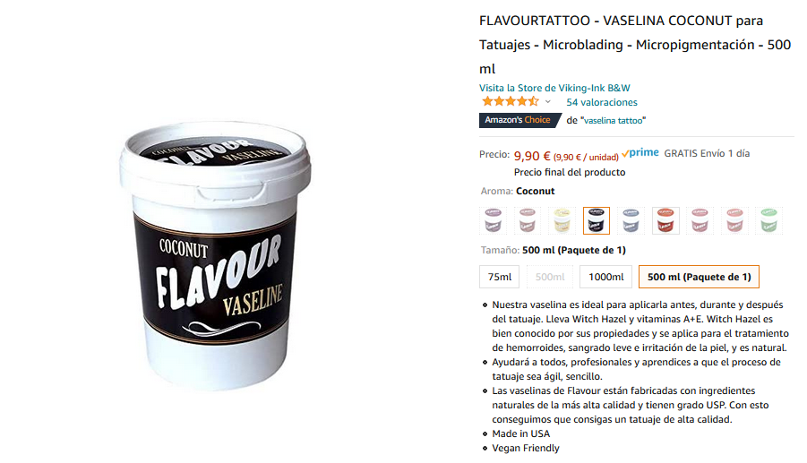
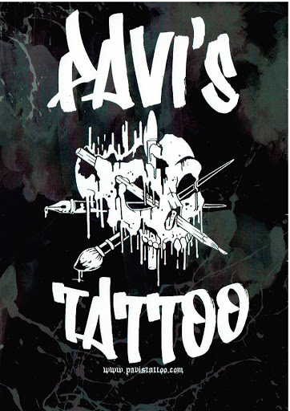

Oh,vaya parece que el destino te ha traido aquí, dejame comentarte que en este maravilloso sitio web encontrarás un sin fin de objetos que me alegrarían enormemente.
Pronto encontrarás aquí la respuesta a todos tus problemas de simple mortal.
Empecemos...
Un poco de tinta nunca viene mal... (IRE METIENDO MAS JEJE)


